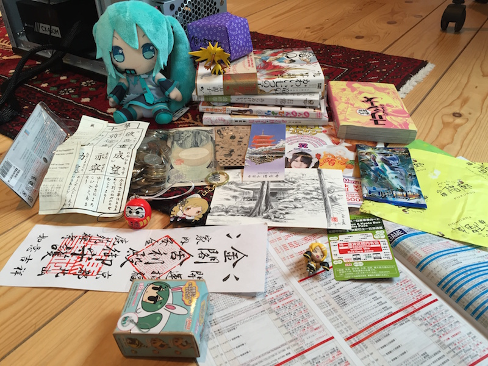
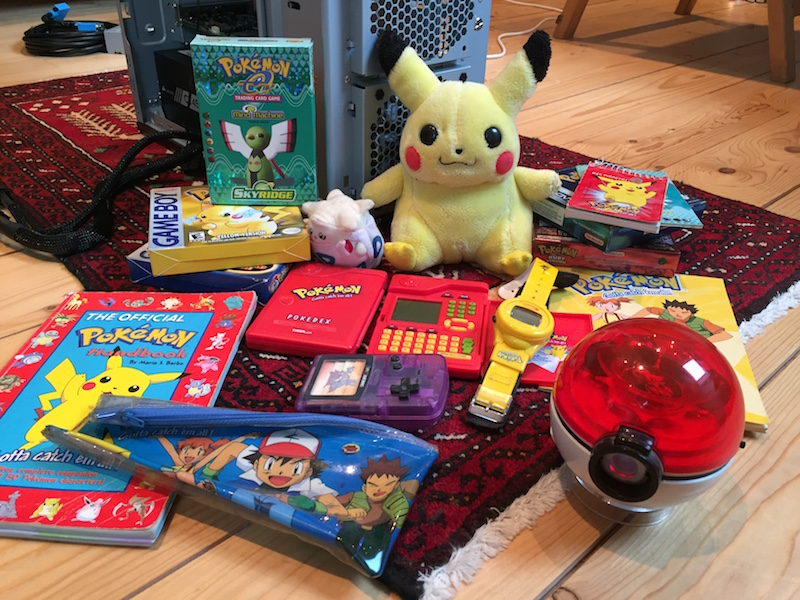
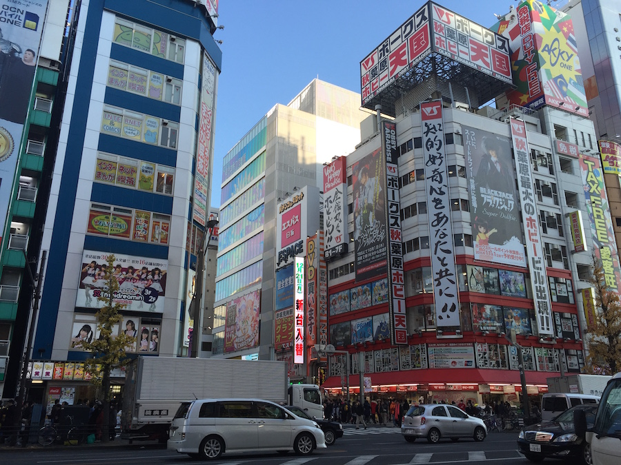
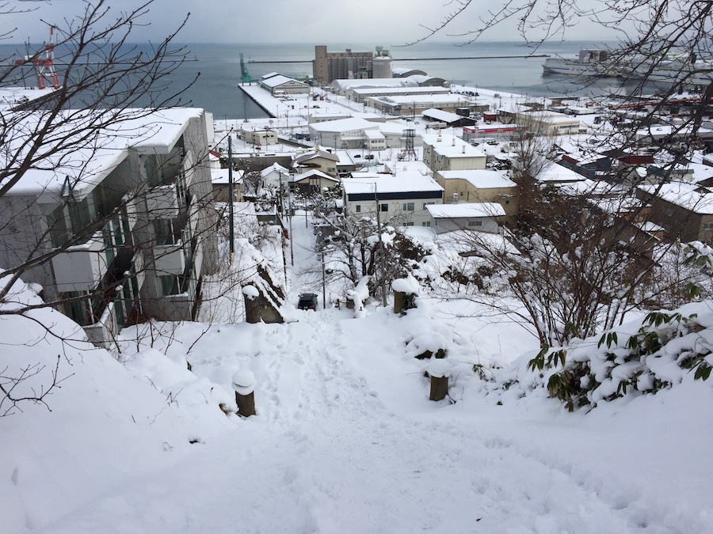
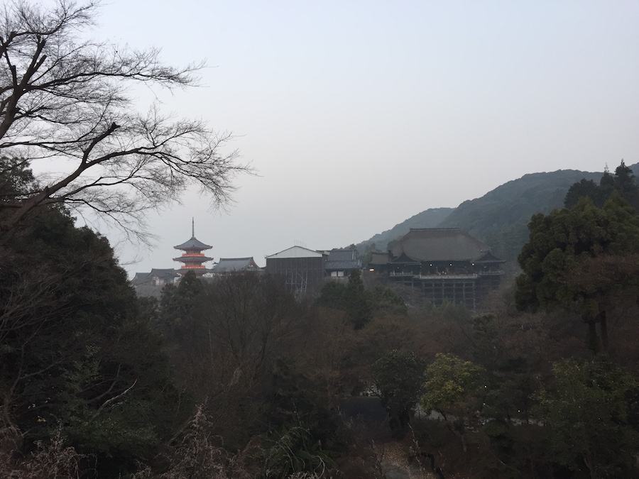
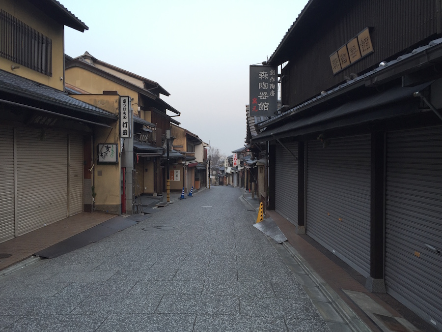
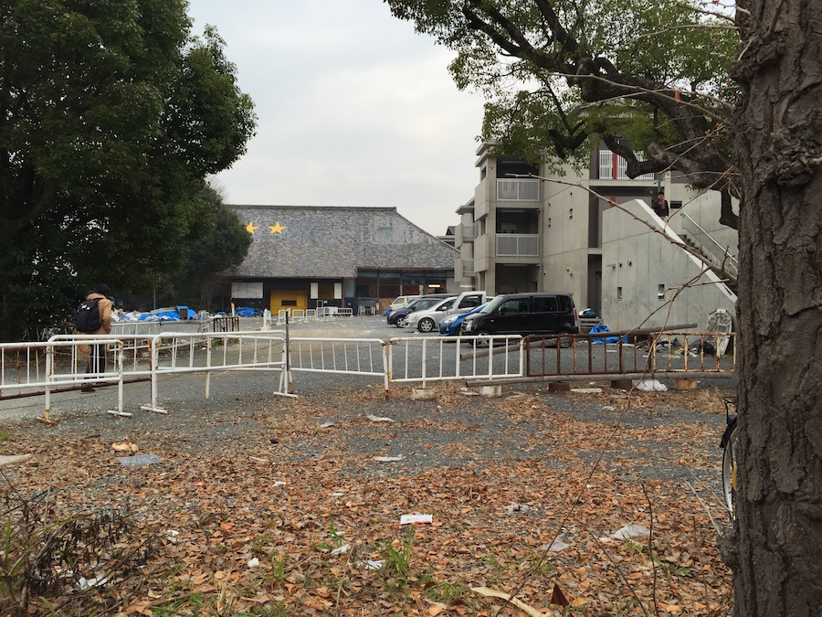
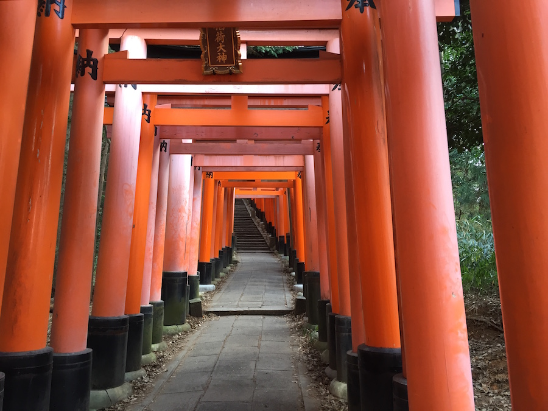
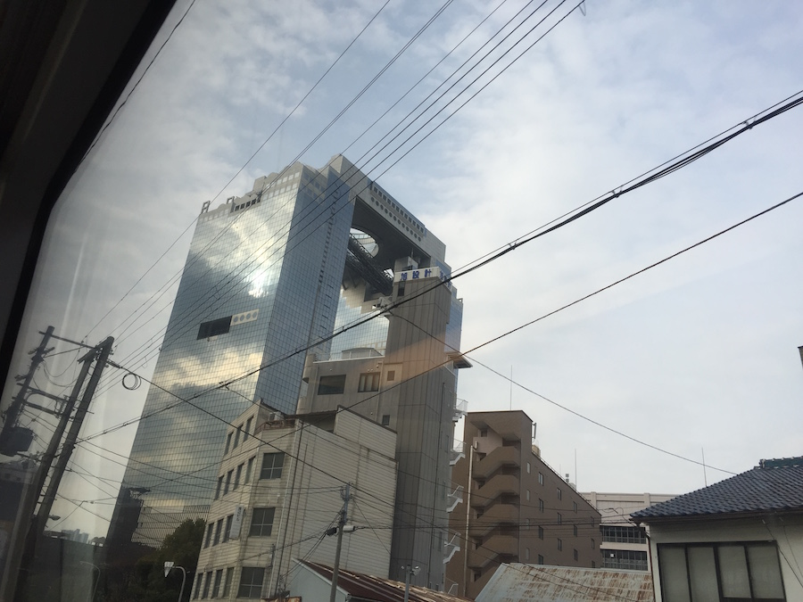

Iv been to quite a few places, but very few have as much interesting junk as japan, so I figured Id post some here.
Heres some junk I picked up, one of them is a fortune ticket.. but no one would tell me what it said..
Some older pokemon stuff, I only remember having one pokedex.. I think its multiplying..
Books are all from Akumakon in Galway, everything on top is from my tip, and the Totoro was a gift!
Well I dont have so many stuff pictures, so heres some pictures of Japan from December/January 2015/2016
Akihabara/Tokyo, The ultimate place to get poor..
Otaru, was apparently gonna be the next big city at the turn of the century, but didn't grow after the 40s.
Kiyomizu-dera Temple and the street outside at 5am, They say if you jump from the temple and survive your wish will be granted.
 The student theater at Kyoto University, I heard a rumour that the collage has tried to burn it down 5 times and failed, all around it has been rebuilt.
Fushimi Inari Taisha/Kyoto its not actually empty like this, I spent a long while getting this shot..
Osaka from the train on the way to the airport.
